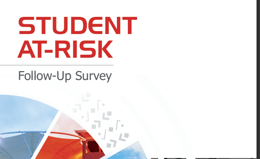
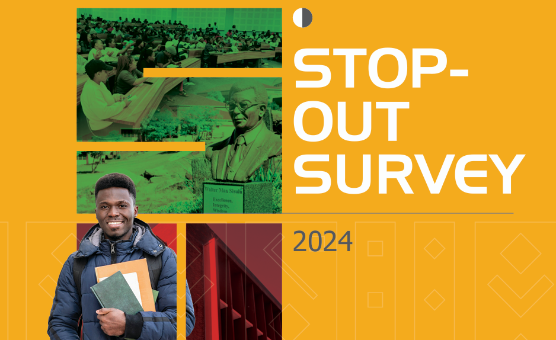

Data & Insights


Latest Reports

Survey
2024 Student At Risk Report
Comprehensive analysis identifying and supporting at-risk students to foster equity, inclusion, and academic achievement.
View Report
Survey
Stop Out Survey
Understanding the reasons behind student stop-outs to develop effective retention and re-engagement strategies.
View Report
Survey
Graduate Destination Survey
Class of 2024 – insights into graduates' career trajectories and further study pursuits post-graduation.
View Report
Survey
Postgraduate Experience Survey 2024
Enhancing postgraduate education by ensuring students receive the highest support and academic growth opportunities.
View Report
Survey
Undergraduate Experience Survey 2024
A milestone inaugural survey committed to understanding and enhancing the undergraduate student journey at WSU.
View Report
Report
Employment Assessment Report 2024
Insights into graduate employment rates and skills demand across economic sectors.
View Report